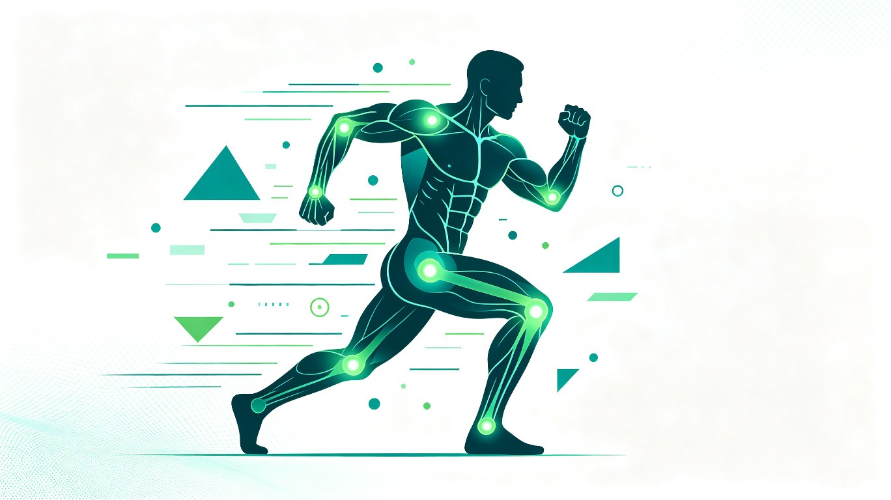

一个基于 Web 的交互式运动科普指南，以可视化方式展示人体六大关节对应的肌群和推荐训练动作，帮助用户建立"结构-功能-训练"的完整认知。
想解决什么问题：很多人在健身或日常运动中存在"盲目训练"的问题——不知道某个动作练的是哪块肌肉，不清楚自己的关节活动范围，更不懂如何针对薄弱部位进行强化。这导致训练效果差、甚至造成运动损伤。
灵感来源：身边朋友的真实经历：有人因为错误的深蹲姿势导致膝盖疼痛，有人长期伏案工作却不知道怎么缓解肩颈僵硬，还有人想练肩却不知道从何下手。市面上虽然有很多健身 App，但大多以课程为主，缺乏"关节-肌肉"对应关系的系统性知识科普。
产品形态：一个基于 Web 的交互式运动科普指南，以可视化方式展示人体六大关节（肩、肘、腕、髋、膝、踝）对应的肌群和推荐训练动作。
想了解基础解剖知识，建立正确训练认知，避免盲目跟风训练
肩颈腰背不适，需要针对性放松和强化，预防职业病
关节损伤后需要科学恢复训练，了解安全的运动方式
作为教学辅助工具，向学员直观展示人体结构和动作对应关系
提升大众运动科学素养，减少因错误训练导致的运动损伤。通过普及"关节-肌肉-动作"的对应知识，帮助更多人建立终身受益的运动认知框架。
将原本需要翻阅解剖学教材、咨询专业人士才能获取的知识，浓缩为 15 分钟可浏览完的交互式指南。用户可以快速定位问题、找到解决方案，大幅提升学习和训练效率。
使用 TRAE Work 生成的交互式 HTML 演示文稿，包含 15 页完整内容：

原生 Web 技术，无需安装，浏览器即可打开
适配桌面端和移动端，随时随地查阅
使用 AI 生成运动主题插图，视觉统一专业
键盘翻页、主题切换、动画效果，体验流畅